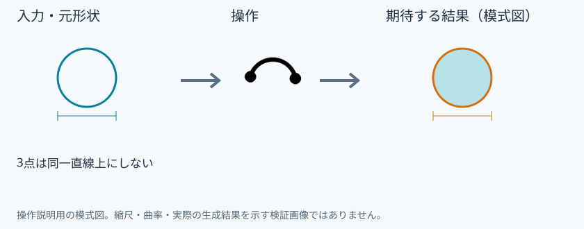
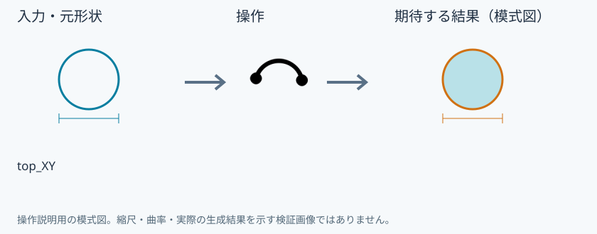
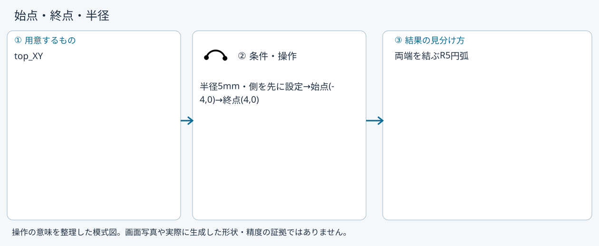
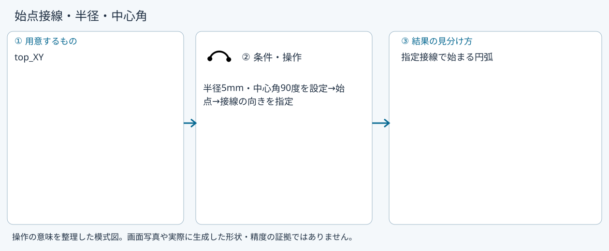
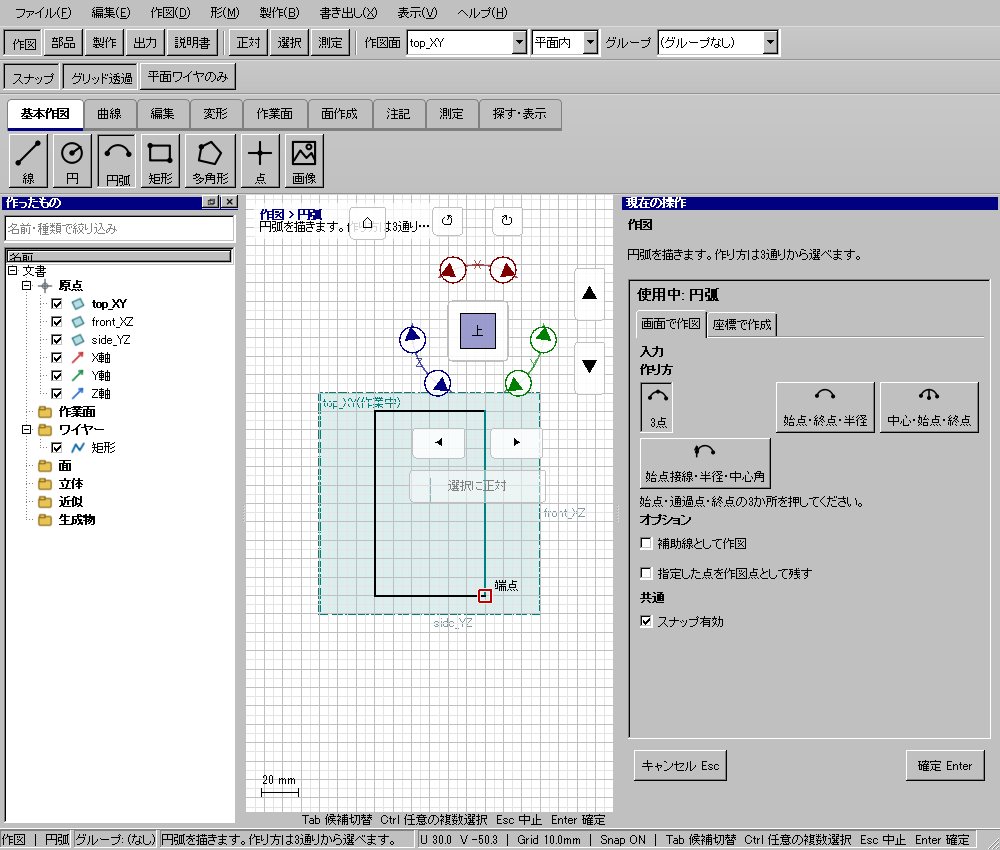

円弧
具体例: 上側の半円アーチを作る

準備
top_XYに正対する
操作手順
- 円弧を選び3点の作り方にする
- (-10,0),(0,10),(10,0)の順に置く
設定: 3点は同一直線上にしない
結果を確認
半径10mmの上半円弧ができる。
取消・やり直し
未確定入力をEscで取り消します。道具を終えるときは選択(V)または別の道具へ切り替えます。 確定済みの文書変更はCtrl+Z、やり直しはCtrl+Yです。保存・書出し済みのファイルはUndoの対象ではありません。
進めない場合
円弧を描きます。作り方は3通りから選べます。
対象欄と3Dの強調を照合し、必要な線・面・部品を各役割へ指定します。処理中は計算表示を確認し、取消が可能な処理は取消を使います。
3点
準備: top_XY

- 始点(-5,0)
- 通過点(0,5)
- 終点(5,0)
確認: 上半分の半円弧
始点・終点・半径
準備: top_XY

- 半径5mm・側を先に設定
- 始点(-4,0)
- 終点(4,0)
確認: 両端を結ぶR5円弧
中心・始点・終点
準備: top_XY
- 中心(0,0)
- 始点(5,0)
- 終点(0,5)
確認: 90度の円弧
始点接線・半径・中心角
準備: top_XY

- 半径5mm・中心角90度を設定
- 始点
- 接線の向きを指定
確認: 指定接線で始まる円弧
Windows版の操作画面
